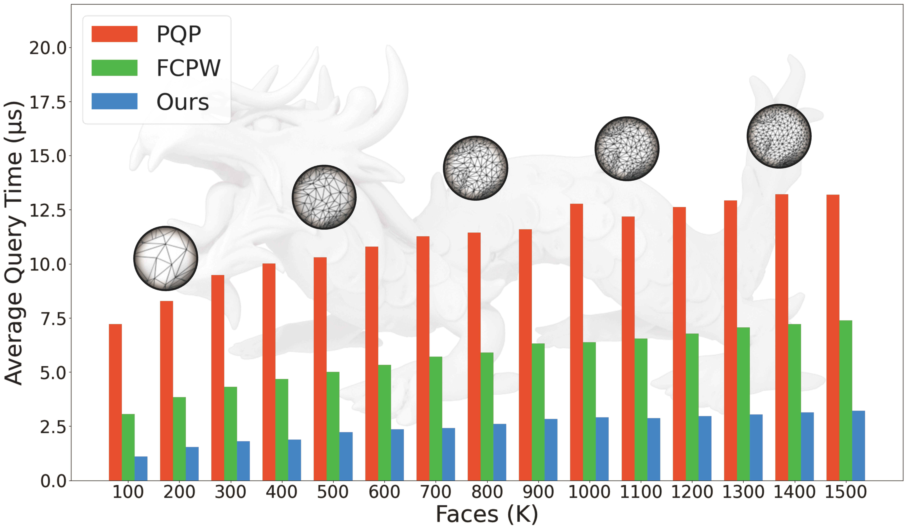

Publications
-

NEW! P2M: A Fast Solver for Querying Distance from Point to Mesh Surface Conditionally Accepted to SIGGRAPH 2023 Journal Track. [Project Page] [code]
I am a second-year Ph.D. candidate at the Interdisciplinary Research Center (IRC) of Shandong University. I am under the tutelage of Prof. Shiqing Xin.I received my B. Eng. degree at Shandong University. My research interests are computer graphics, computational geometry, point cloud reconstruction and geometric modeling.
NEW! P2M: A Fast Solver for Querying Distance from Point to Mesh Surface Conditionally Accepted to SIGGRAPH 2023 Journal Track. [Project Page] [code]